Comment s'en servir
Un écran = une tâche. Tout part de la fiche Salesforce ouverte.
Fiche
Ouvre une Piste ou une Opportunité : Cockpit lit la fiche tout seul et te propose les écrans utiles.
Une saisie laissée en cours est marquée Reprendre : tu la retrouves telle quelle.
↻ relit la fiche si tu viens de la modifier dans Salesforce.
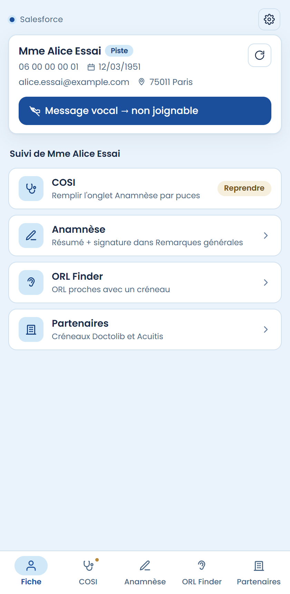
Message vocal → non joignable
Le patient ne répond pas ? Un clic sur Message vocal → non joignable : Cockpit écrit le commentaire MV, enregistre, puis passe la Piste en « non joignable ».
Raccourci : Ctrl + Shift + M, depuis n'importe quel écran. Le bouton est sur l'écran Fiche.
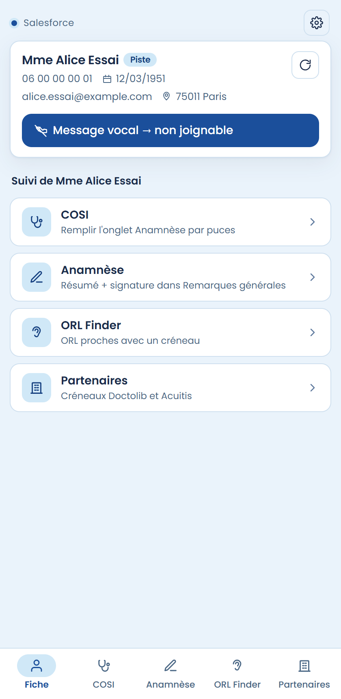
COSI
Clique les puces qui décrivent le patient, puis Appliquer : les champs de l'onglet Anamnèse de Salesforce sont remplis.
Les puces restent cochées tant que tu n'as pas appliqué.
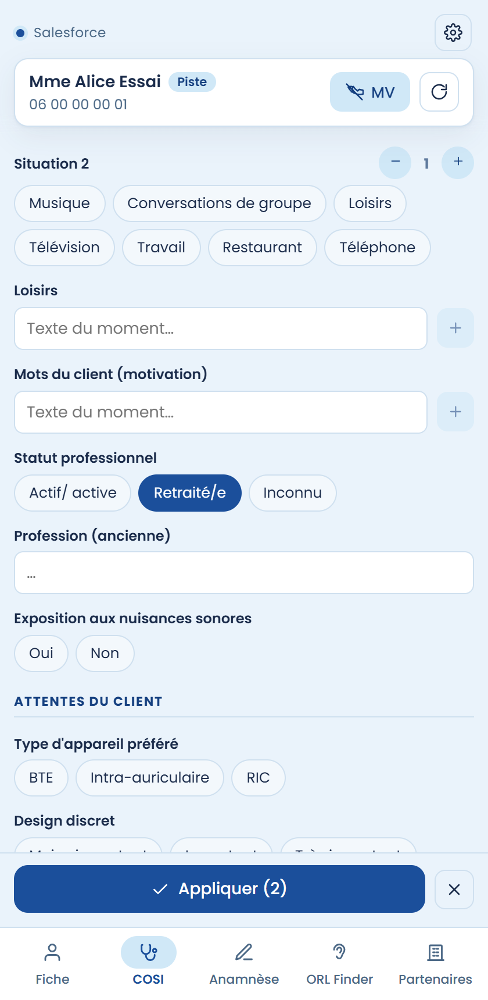
Anamnèse
Choisis la situation (dépistage, 1er RDV…) : le texte se prépare avec ton nom et ta signature.
Copie le résumé Salesforce puis Coller le résumé : il se glisse au milieu. Puis Écrire : le texte part dans « Remarques générales » de la fiche.
Tu peux corriger le texte directement dans l'aperçu avant d'écrire.
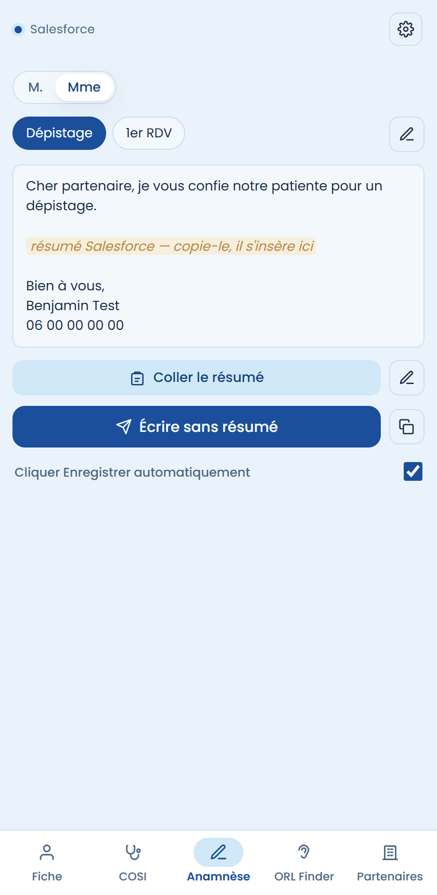
Mails
Sur une Opportunité : choisis Patient ou Partenaire, puis un modèle. Le nom est déjà rempli depuis la fiche.
Complète ce qui manque (date, heure…), puis Insérer dans Salesforce : le mail s'ouvre prêt à envoyer, avec le bon destinataire.
Un modèle SMS se copie en un clic : Copier le SMS.
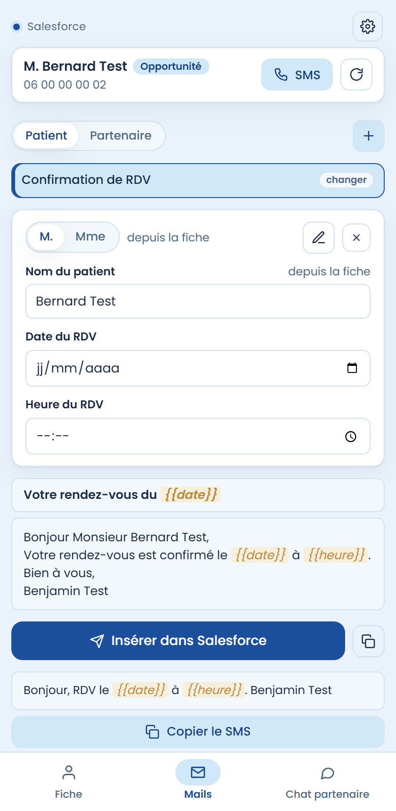
Créer ou modifier un modèle
- Dans Mails, clique + (ou le crayon sur un modèle existant).
- Donne un titre, choisis Patient ou Partenaire, E-mail ou SMS, écris ton texte.
- Enregistrer. Le modèle est dans ta liste.
Pour insérer ce qui change à chaque fois, clique une variable : {{nom}} {{date}} {{heure}} {{nom partenaire}} {{nom_conseiller}}. Cockpit les remplit au moment d'envoyer.
Écris patient(e) ou il(elle) : Cockpit choisit la bonne forme selon le genre du patient.
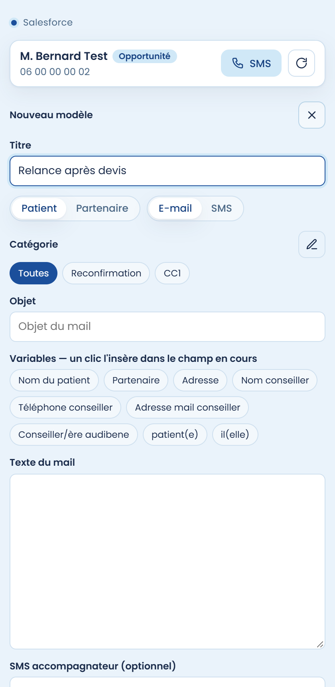
Chat partenaire
Sur une Opportunité : choisis un texte, puis Envoyer dans Chat Partenaire. Il part dans le fil Chatter du partenaire.
Le + ajoute tes propres textes.
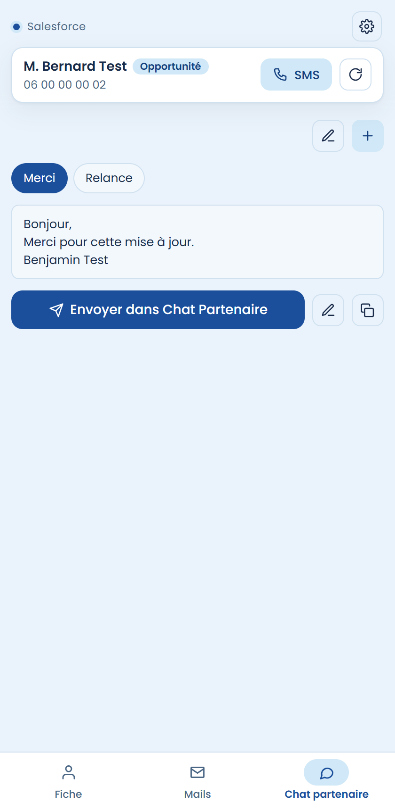
ORL Finder
Sur une Piste : les ORL proches du patient avec leur prochain créneau Doctolib, les plus rapides en tête.
Pour chacun : téléphone, Prendre RDV, Itinéraire. Le bouton Message type copie la question à poser au cabinet.
Filtre par délai ou par secteur, ou tape un nom de ville.
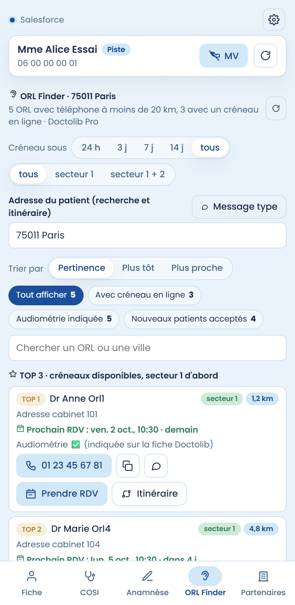
Partenaires
Sur une Piste : les partenaires de l'onglet Partner Search, avec leurs premiers créneaux Doctolib ou Acuitis.
Clique une heure ou Réserver : la page de prise de rendez-vous s'ouvre.
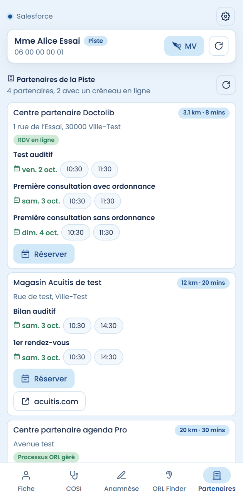
Doctolib / Acuitis
Sur un formulaire de prise de rendez-vous : clique Coller Prénom Nom, les champs du patient se remplissent.
Cockpit garde en mémoire les dernières fiches ouvertes dans Salesforce.
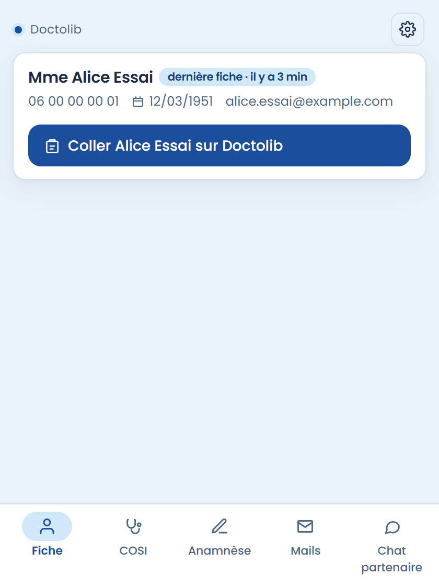
Réglages
La roue ⚙ en haut à droite. Mets ton nom et ton téléphone : ils signent tes messages. Tu peux aussi régler tes signatures et le pied de page des mails.
Dans Données : Partager mes modèles crée un fichier à donner à un collègue ; Importer un fichier récupère les modèles d'un collègue.
Tu y vois aussi la date de ta dernière sauvegarde. Si elle est ancienne, clique Autoriser le dossier : ta sauvegarde est remise à jour.
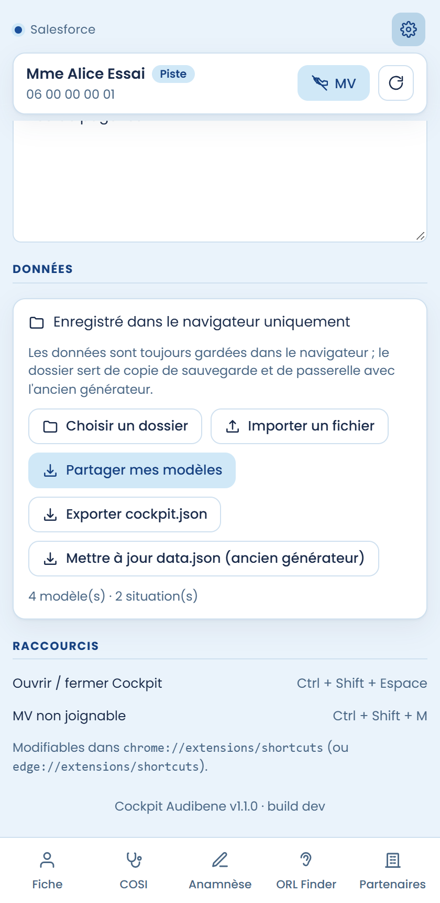
Mise à jour
Télécharge le nouveau zip, remplace le contenu du dossier, puis clique ↻ sur la carte Cockpit dans edge://extensions. Tes modèles et réglages sont conservés.
⚠ Ne clique jamais « Supprimer » sur la carte Cockpit : tes données sont dedans. Ta sauvegarde (cockpit.json) ne contient que ce qui a été copié lors de ton dernier clic sur « Autoriser ».
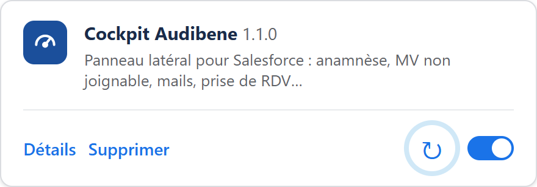